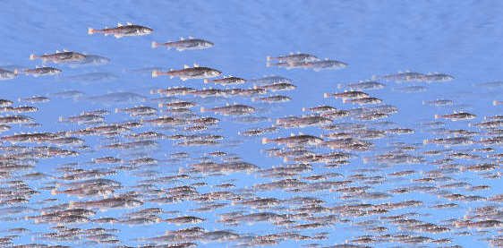
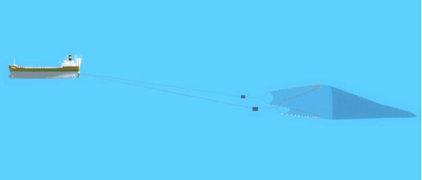
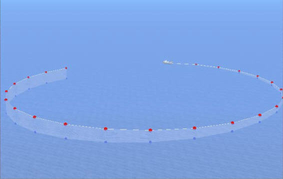
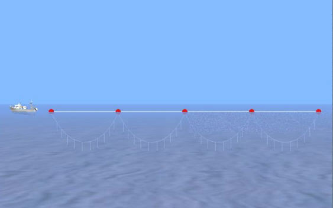

Vista Submarina
La vista submarina es una pantalla gráfica en la que se muestra, el mar, el fondo, la costa, el buque propio, el cardumen, los obstáculos y los artes de pesca, permitiendo al operador hacer un seguimiento visual de la maniobra de pesca.
La vista que se muestra depende de la situación de la cámara. Esta posición se controla en la ventana de Control de Vista Submarina accesible desde el menú de la conning display (ver el documento “Conning Display. Manual del Operador”).
A continuación se muestran algunos ejemplos de las vistas que se pueden obtener desde esta ventana.
Cardumen

Pesca con Arrastre

Pesca con Cerco

Pesca con Palangre
